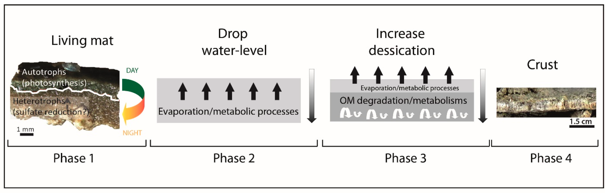

Tracking Organomineralization Processes from Living Microbial Mats to Fossil Microbialites

Resumo em Português
A gênese de microbialitos e, mais precisamente, a litificação de tapetes microbianos têm sido estudadas em diferentes contextos para melhorar o reconhecimento da biogenicidade no registro fóssil. Tapetes microbianos vivos e microbialitos fósseis associados a paleolinhas de costa continentais foram estudados na Bacia continental de Maquinchao, no extremo sul da América do Sul. Neste trabalho, investigamos crostas carbonáticas de uma antiga lagoa onde tapetes microbianos mineralizantes ativos foram previamente estudados.Observações petrográficas revelaram a presença abundante de microfilamentos eretos e não eretos e moldes com diâmetros variando de 6 a 8 micrômetros. Adicionalmente, poros menores e remanescentes de matéria orgânica foram identificados em áreas contendo menos filamentos e dominadas por carbonato. Uma fase rica em Mg, Al e Si foi também identificada na matriz carbonática associada à calcita micrítica dominante. Além disso, bainhas mineralizadas contêm carbonato misto (calcita) com Mg, Al e Si, onde os últimos elementos estão associados a argilas autigênicas. A presença de bainhas mineralizadas atesta processos biologicamente induzidos durante a absorção de CO₂ por microrganismos fotossintéticos. A alta densidade da fase micrítica suporta a mineralização subsequente por microrganismos não fotossintéticos e/ou processos físico-químicos como a evaporação. Como a microestrutura de filamentos micríticos dessas crostas recentes é muito similar à observada em microbialitos fósseis, elas podem ser utilizadas para preencher a lacuna entre tapetes vivos e estruturas fósseis.